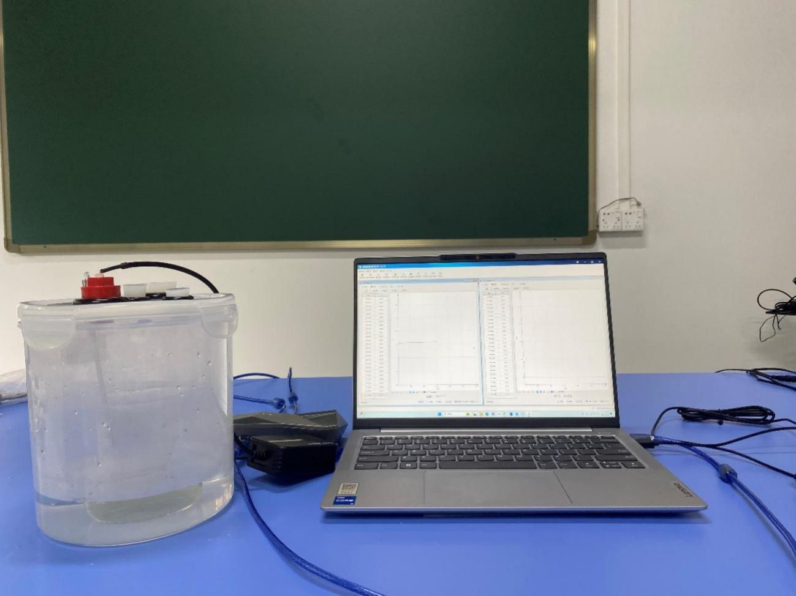
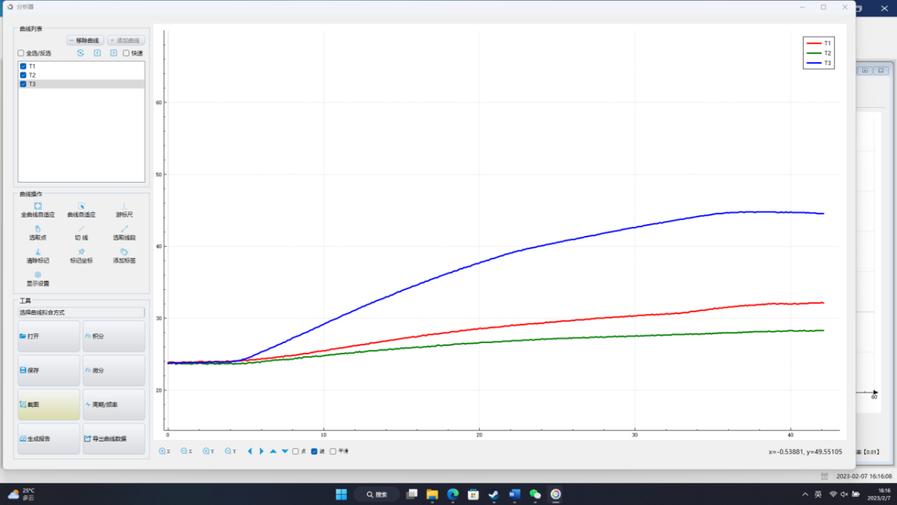

实验六十九 温度对酶活性的影响
【实验目的】
探究过氧化氢酶发挥催化作用的最适宜的温度。
【实验原理】
双氧水在过氧化氢酶的催化作用下分解为O2，用氧气传感器可以测得O2浓度随时间变化的情况。 在不同的温度下进行同样的实验，可以通过实验结果比较得出过氧化氢酶起催化作用的最适宜温度。本次实验将在0—40℃这个范围内分为四个区间0—5℃、20—25℃、30—35℃、35—40℃，比较在四个区间内酶的催化效率。
【实验器材及试剂】
数据采集器、氧气传感器、温度传感器、计算机、玻璃瓶、移液管、保温杯（水浴）、葡萄糖、浓度为3%的H2O2溶液等。
【实验装置图】

【实验操作步骤】
1.取四个保温杯，分别注入温度范围为0—5℃、20—25℃、30—35℃、35—40℃的自来水，用温度计监测各杯水温度使其稳定在上述范围内；
2.将氧气传感器和温度传感器接入数据采集器，打开实验数据分析软件，打开“表格视图”，选择自动记录数据的频率为“1Hz”；
3.用天平称取2g干酵母溶解在100ml质量分数为2%的葡萄糖溶液中，搅拌均匀，然后用移液管移取10ml配制好的溶液于4个玻璃瓶中；
4.取其中一个玻璃瓶置于水温为0—5℃保温杯中水浴5分钟，用移液管移取10ml的H2O2溶液加入此玻璃瓶，用氧气传感器探头胶塞将玻璃瓶塞紧，然后点击表格视图中的“采集”按钮，开始记录实验数据；
5.待氧气传感器的读数再次稳定时，点击“暂停”按钮，然后点击“数据分析”按钮，作出“O2浓度—时间”曲线；
6.将其他3个玻璃瓶分别置于水温为20—25℃、30—35℃和35—40℃的保温杯中，重复实验步骤4、5，做出各次实验对应的“O2浓度—时间”曲线；
7.比较各次实验中得到的“O2浓度—时间”曲线，总结温度对过氧化氢酶催化效率的影响。

实验结果数据分析
【注意事项】
实验过程中应注意控制好水浴的温度。
【思考与讨论】
1.根据实验结果说明温度对过氧化氢酶活性的影响，判断过氧化氢酶活性最强的温度区间。
2.联系前面学过的知识，试说明酶的活性受到哪些环境因素的影响